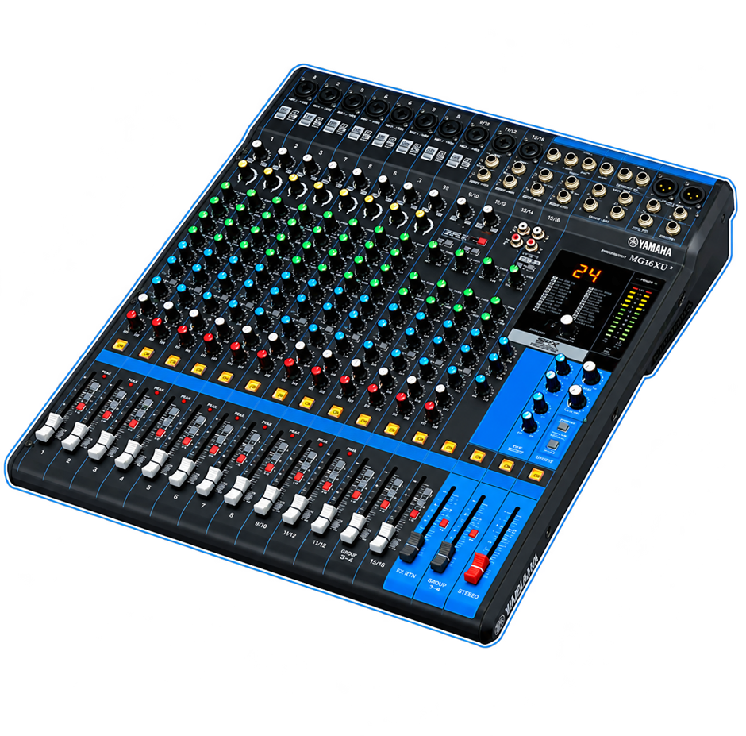

MG16XU guide
Features, functions and basic operation of the MG16XU.
 Yamaha AMC Guides
Yamaha AMC Guides
A self-made guide to the Yamaha MG16XU analog mixing console. It covers what every knob, button and fader does, how signal moves through the board, and the basic operations to get a clean mix.

Features, functions and basic operation of the MG16XU.
Step-by-step lessons on routing, effects, recording over USB and more.
Guides for the other MG consoles, plus extra operations and reference material.